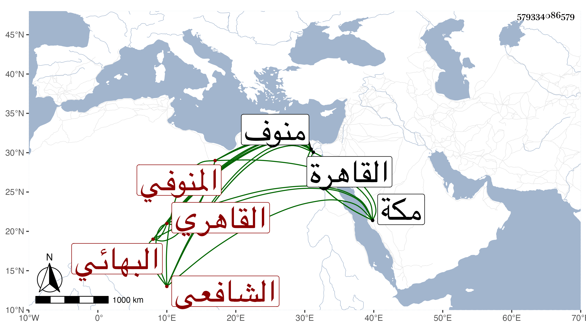

0902Sakhawi.DawLamic.ITO20230111-ara1.EIS1600.579334086579
Biography ID: 579334086579
624
علي بن أحمد بن محمد بن احمد عبد القادر بن عثمان بن ظهير الدين النور بن الشهاب المنوفي ثم القاهري البهائي الشافعي والد أحمد ومحمد ويعرف بابن أخي المنوفي . ولد في ربيع الأول سنة ثلاث وعشرين وثمانمائة بمنوف ونشأ بها فحفظ القرآن والعمدة والمنهاج الفرعي والأصلي وألفية الحديث والنحو وعرض على شيخنا والمحب بن نصر الله والتفهني والسعد بن الديري والقاياتي والعيني والعلم البلقيني ، وقطن القاهرة من أول سنة إحدى وأربعين في كنف أبيه وعمه وبحث المنهاج الفرعي والأصلي بقراءته على البرهان بن خضر وثانيهما فقط على العز عبد السلام البغدادي ومجموع الكلائي على الزين البوتيجي بل سمع عليه فرائض الروضة بقراءة ابن أبي السعود وقرأ ألفية النحو بحثا على الحناوي وشرحها لابن المصنف على الجمال بن هشام وشرح النخبة على شيخنا مصنفه بل سمع عليه شرح ألفية شيخه مع أصلها دراية والكثير رواية كقطعة من كل من البخاري والدلائل والحلية والطبراني الأوسط ومسند الشافعي وفتح الباري ومقدمته وتخريجه للأذكار ولازمه في كتابته عنه في الإملاء وسمع قطعة من تلخيص المفتاح ومن شرح الألفية لابن أم قاسم على ابن حسان وقطعة من المنهاج الأصلي على القاياتي ومن الروضة على الونائي ومن المنهاج على العلاء القلقشندي والعلم البلقيني وكذا سمع عليه قطعة من التدريب وتكملته وغير ذلك ثم أخذ عن طبقة تليها فلازم البدر أبا السعادات البلقيني في تقسيم الكتب الثلاثة التنبيه والمنهاج والحلاوي والصلاح المكيني في تقسيم التنبيه والمنهاج وشرح البهجة وكان أحد القراء فيها عليهما بل قرأ بأخرة على أولهما المنهاج الأصل والمنهاج ، وحج قبل أخذه عن هذين مع الرجبية في سنة سبع وأربعين فوصل مكة في أول رمضان فتلا لأبي عمرو على الزين بن عياش ولعاصم على الشمس محمد الكيلاني وسمع على التقي بن فهد بقراءة ولده أشياء ثم رجع فوصل القاهرة في أول التي تليها وتدرب قبل ذلك وبعده في الشروط بعمه التقي عبد الغني المنوفي وتصدى لذلك ببابه بل كتبه أحيانا في باب شيخنا رفيقا لابن المهندس ونحوه ثم بباب العلم البلقيني واستقر عنده في النقابة شريكا لغيره ولم ينتج له فيها أمر وناب عنه في القضاء وكذا عن المناوي والمكيني واختص به وبأبي السعادات دون من بعدهم ، وكتب بخطه الكثير جدا لنفسه وغيره ومما كتبه فتح الباري غير مرة والإصابة وما يفوق الوصف وأنشأ دارا متوسطة تلو أخرى لطيفة ولم يمت العلم البلقيني حتى أخذ في الانخفاض ثم لا زال أمره في انخفاض وعيشه في ضيق وبدنه في تناقص مع استمرار تكدره من جهة أم أولاده وتكليفه له بل ومن جهة ولديه منها أيضا وهو مكابد بحيث باع ما كان عنده من كتب ومعظم دار سكنه التي أنشأها وجل ثياب بدنه ، كل هذا مع عدم انفكاكه عن الاشتغال والمطالعة والكتابة حتى أنه لازم الزين زكريا حين كان قاضيا في شرحه على البهجة وكتب منه قطعة وفي غيره وقرأ على الجلال البكري النصف الأول من المنهاج وأماكن مفرقة من شرحه للدميري وجميع حاشيته على المنهاج وعلى الروضة وما كتبه على الدميري والبخاري وكتابته لذلك كله بل وسمع قطعة من الروضة ومختصرها الروض وجملة وأذن له في التدريس والإفتاء في رجب سنة سبع وسبعين وكذا أذن له قبل ذلك في التدريس العلم البلقيني وأخذ عني أشياء وكتب جملة من تصانيفي وكان زائد الاغتباط بها بل يقول الدعاء بحياتك وحياة البكري من الواجبات ونحو ذلك ومما كتبه القرآن وسائر متونه التي حفظها في صغره وكتب بهامش جميعها من التفاسير والشروح ما يحسن أن يكون شرحا مستقلا وربما راجعني في كثير من شرح الألفية الحديثية وكذا لخص شرح التعرف في التصوف للعلاء القونوي وقرأه على الزين عبد الرحيم الأبناسي ولخص أيضا بداية الهداية للغزالي وغير ذلك ، كل ذلك مع سلامة الفطرة وكونه لونا واحد وفضيلته في الفقه والعربية وتقدمه في الشروط وحسن كتابته ومشاركته في الفضائل ونقص حظه عن أقرانه بل عن من يليه بكثير واستمراره فيما بلغني على القيام والتهجد إلى أن تعلل بالإسهال ونحوه حتى مات في ليلة الأربعاء عاشر شعبان سنة تسع وثمانين وصلي عليه من الغد ثم دفن بتربة كوكاي وظهرت بركته في إسراع موت ولديه بعد وفاة زوجته رحمه الله وإيانا .
